托管 5 个 LINE 官方账号：
取密钥 + 部署公网
一台小 VPS 同时托管 5 个 LINE Official Account。每个账号一套独立密钥、一条独立 webhook 路径；服务端按路径分流、按账号验签、按账号回复。
line-hub/。
你会拿到什么
每个账号 3 样东西，5 个账号一共 15 个值：
| 名称 | 在哪一页 | 干什么 | 对应 .env |
|---|---|---|---|
| Channel ID | Basic settings | 对账、排错 | 记在本子上即可 |
| Channel secret | Basic settings | 校验 webhook 签名 | ACCn_CHANNEL_SECRET |
| Channel access token | Messaging API | 调用 API 发消息 | ACCn_CHANNEL_TOKEN |
填完之后长这样：
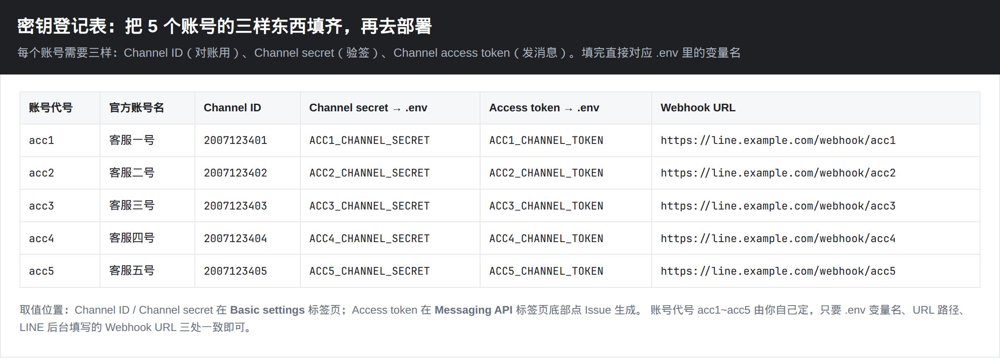
0. 先看懂整体架构
用户在手机 LINE 里给某个官方账号发消息 → LINE 平台按该 channel 配置的 Webhook URL 把事件 POST 到你的服务器 → 你的服务用这个账号自己的 secret 验签 → 立刻回 200 → 后台用这个账号自己的 token 调 reply API。
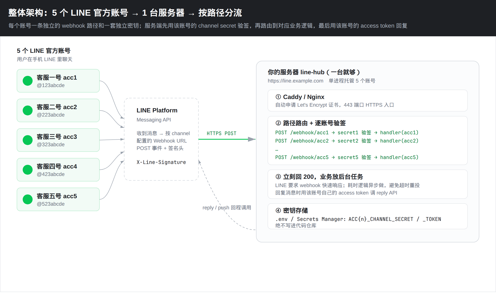
为什么要 5 条路径、不能共用一个 webhook？
- LINE 每个 channel 只能填一个 webhook URL。
- 签名用的 secret 每个 channel 不同。共用一个入口就不知道该用哪把钥匙验签。
- 回消息用的 token 也不同。路径即账号，最不容易搞混。
1. 在 Official Account Manager 建好 5 个账号
打开 https://manager.line.biz/。没有 Business ID 先按 官方入门 注册一个。一个登录账号可以管多个官方账号，5 个号建在同一个 Business ID 下最省事。
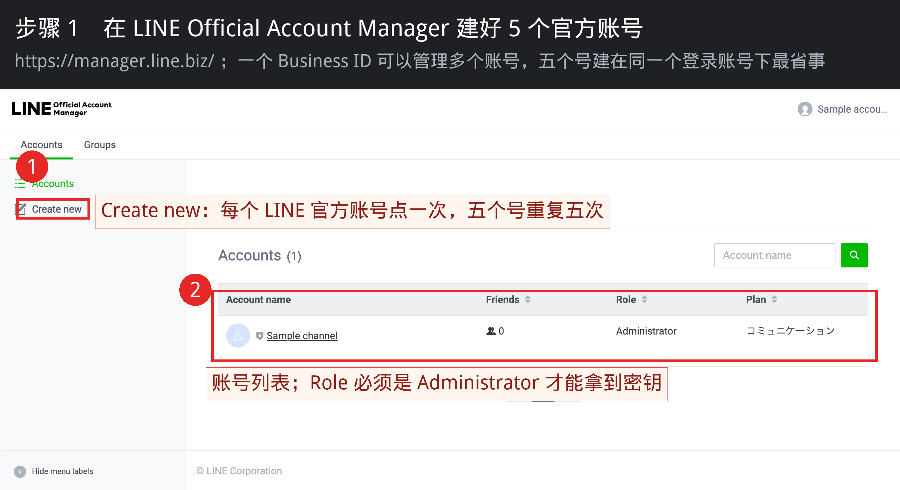
2. 给每个账号启用 Messaging API
路径：选中某个账号 → 右上角「設定 / Settings」→「Messaging API」→ 点 Enable。启用后才会在 LINE Developers Console 生成同名 channel。5 个账号各点一次。
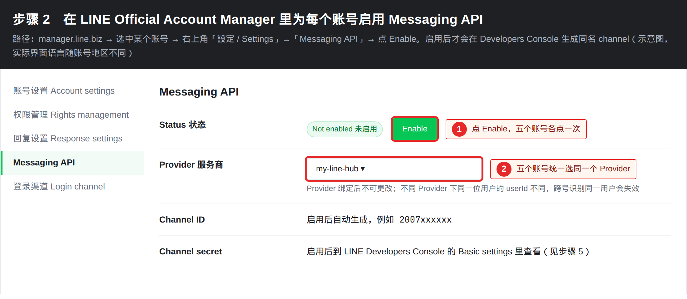
userId 不一样，以后想跨号识别同一用户会失效。
3. 建立 / 选择 Provider
打开 https://developers.line.biz/console/。没有 Provider 就新建一个，例如 my-line-hub。
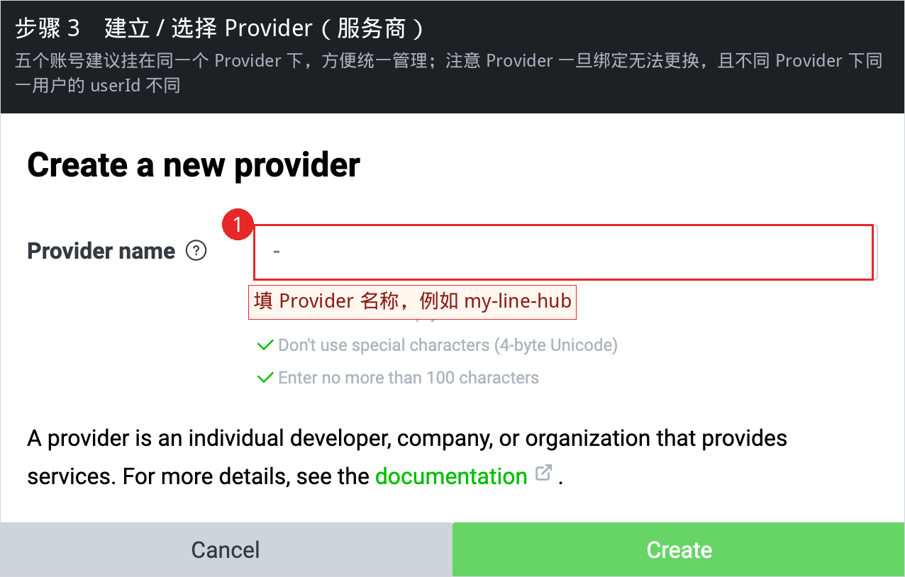
4. 打开对应的 Messaging API channel
启用 Messaging API 之后，每个官方账号会在这个 Provider 下出现一张卡片。点进去。5 个账号就是 5 张卡片，后面第 5～8 步对每张卡片各做一遍。
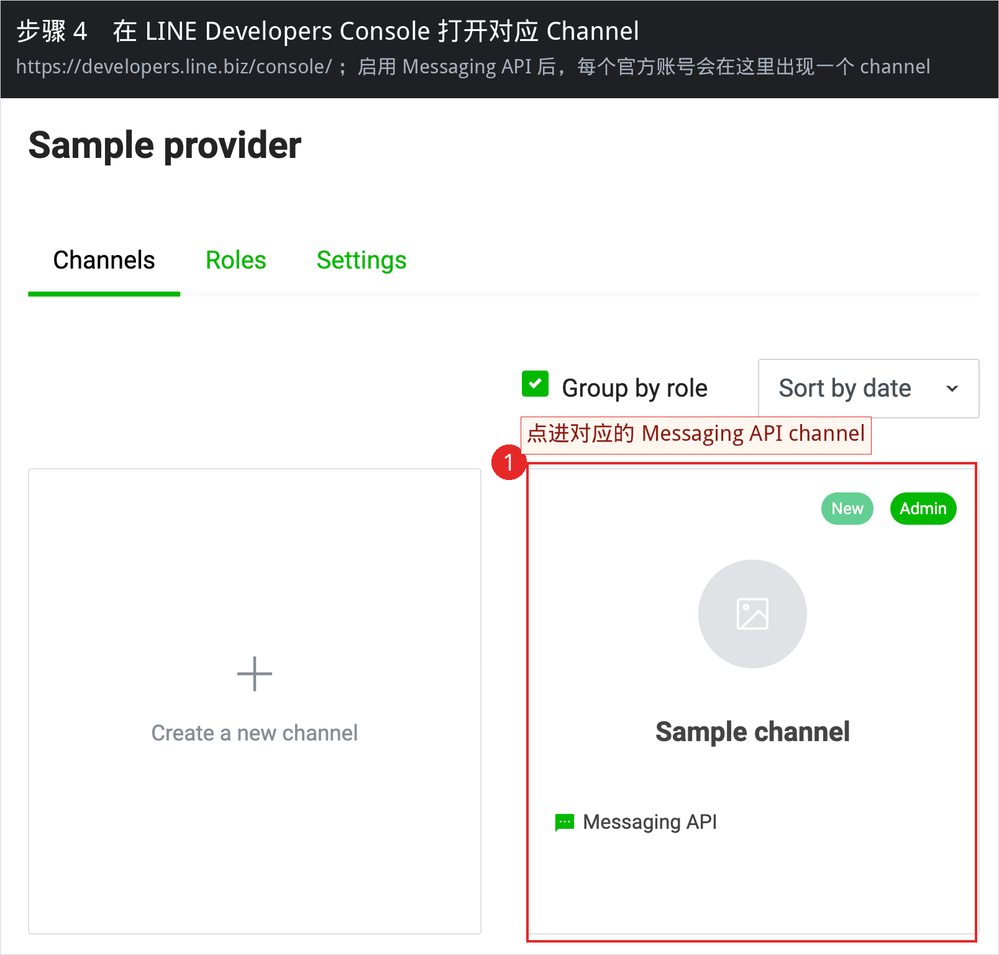
5. 复制 Channel secret（验签用）
进 channel 后先打开 Basic settings 标签页。
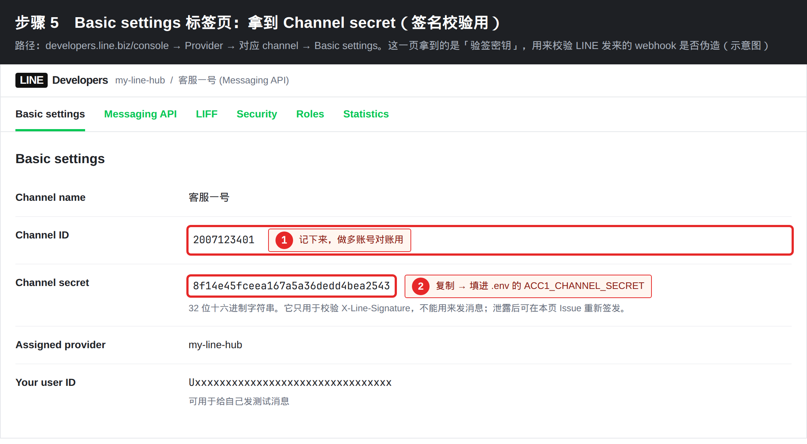
- Channel ID：一串数字，记下来对账用。
- Channel secret：32 位十六进制。复制到
.env的ACC1_CHANNEL_SECRET（二号就ACC2_…）。 - secret 不能用来发消息，只用来校验
X-Line-Signature。怀疑泄露了就在本页重新 Issue。
6. 签发 Channel access token（发消息用）
切到 Messaging API 标签页，拉到 Channel access token (long-lived)。
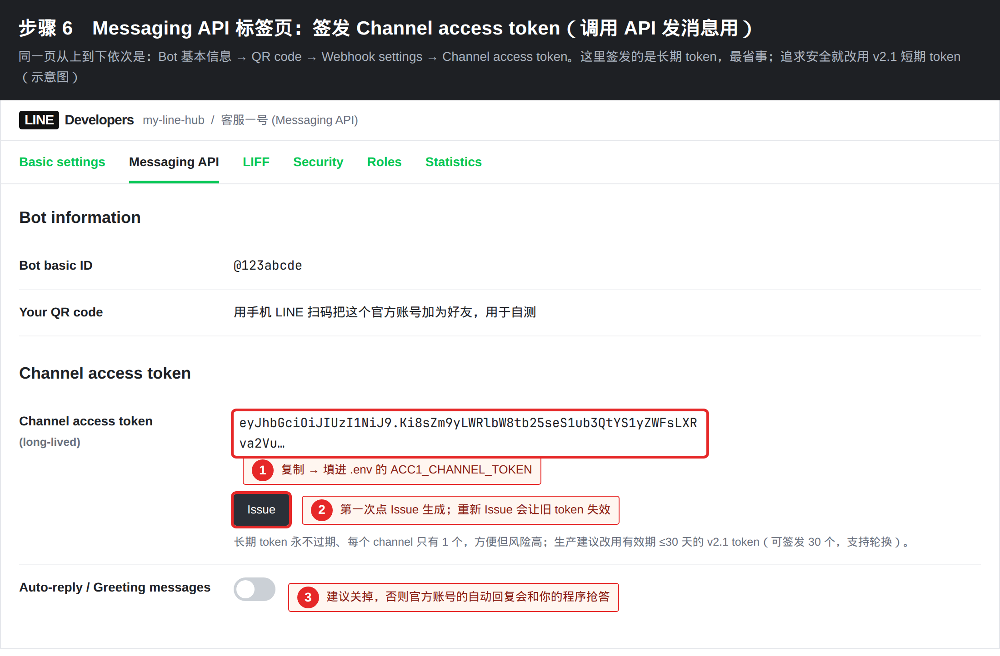
- 第一次点 Issue 生成，复制到
.env的ACC1_CHANNEL_TOKEN。 - 重新 Issue 会让旧 token 立刻失效，正在跑的服务会发不出消息。
- 长期 token 永不过期、每个 channel 只有 1 个，图省事可以先用。上线后建议换成有效期 ≤30 天的 v2.1 token。
- 同一页把 Greeting messages 和 Auto-reply messages 关掉，否则官方账号会和你的程序抢答。
用手机 LINE 扫本页的 QR code，把这个官方账号加为好友，后面自测要用。
7. 填 Webhook URL（先不要 Verify）
还在 Messaging API 标签页，找到 Webhook settings。这一步要等服务器起来再 Verify，但 URL 规则现在就要定好：
| 账号 | Webhook URL |
|---|---|
| acc1 | https://你的域名/webhook/acc1 |
| acc2 | https://你的域名/webhook/acc2 |
| acc3 | https://你的域名/webhook/acc3 |
| acc4 | https://你的域名/webhook/acc4 |
| acc5 | https://你的域名/webhook/acc5 |
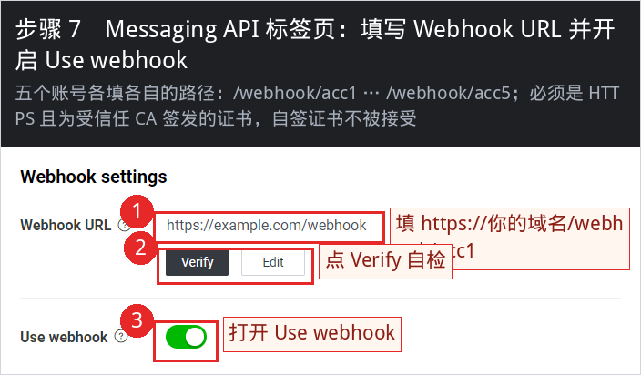
先点 Edit 填上 URL 并 Update。Use webhook 先打开。Verify 等第 11 步服务器起来再点。建议同时打开失败重投：
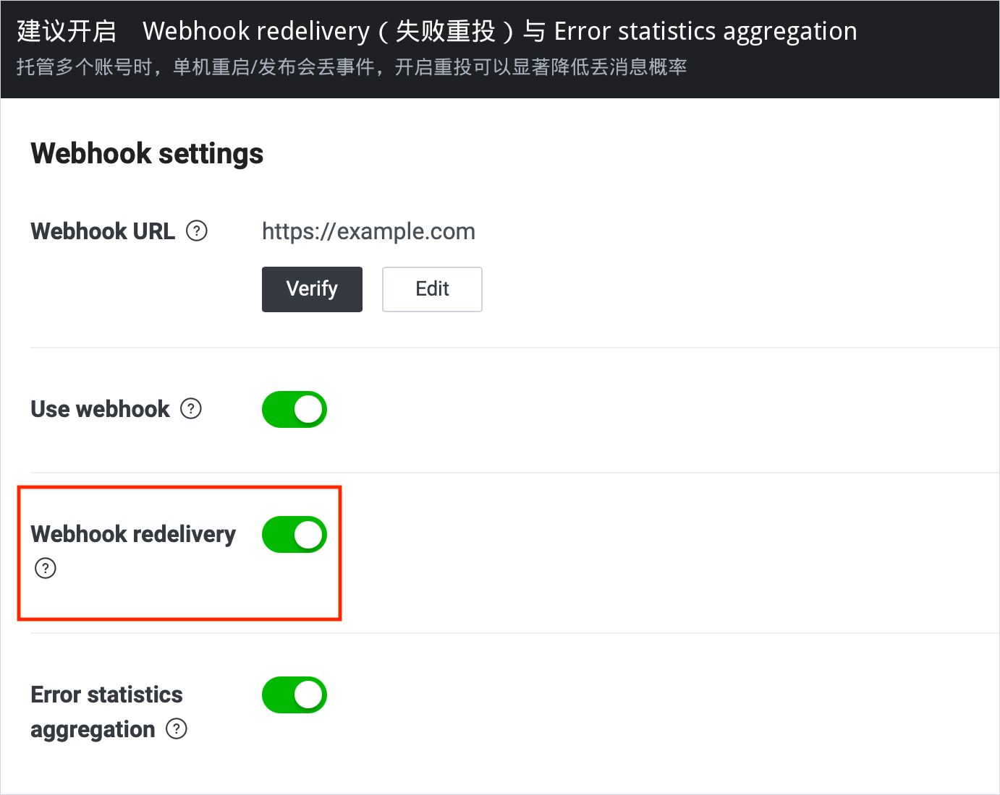
8. 本地先跑通（可选，但强烈建议）
本机没有公网 HTTPS，LINE 的 Verify 会失败。本地只做两件事：确认程序能起来、确认验签不是摆设。
cd line-hub
python3 -m pip install -r app/requirements.txt
cp .env.example .env
# 把 5 套 SECRET / TOKEN 填进 .env
python3 -m uvicorn app.main:app --host 127.0.0.1 --port 8000另开一个终端：
curl -s http://127.0.0.1:8000/healthz
# 期望: {"ok":true,"accounts":["acc1","acc2","acc3","acc4","acc5"]}用配套测试验证「错 secret 必须 403」：
cd line-hub
python3 -m pip install -r app/requirements.txt pytest
python3 -m pytest tests/test_signature.py -q想用真实 LINE 事件打本地，可以用 ngrok 临时开一条 HTTPS 隧道（免费域名也是受信任证书）：
ngrok http 8000
# 得到 https://xxxx.ngrok-free.app
# 把 5 个 channel 的 Webhook URL 临时改成
# https://xxxx.ngrok-free.app/webhook/acc1 … acc5
# 然后点 Verifyngrok 免费域名会变，只适合联调。正式环境用自己的域名。
9. 买一台能被公网访问的服务器
最低配置：1 核 1G、Ubuntu 22.04 / 24.04、每月流量 1TB 足够。节点优先选 日本或新加坡，离 LINE 平台近。
| 端口 | 用途 |
|---|---|
| 80 | Let's Encrypt HTTP-01 验证，Caddy 必须能拿到 |
| 443 | 正式 HTTPS webhook |
| 22 | SSH，建议改成密钥登录并限制来源 IP |
再准备一个域名，加一条 A 记录指到服务器公网 IP：
line.example.com. A 1.2.3.4用 dig +short line.example.com 确认已经解析到这台机器，再往下走。证书申请依赖这步。
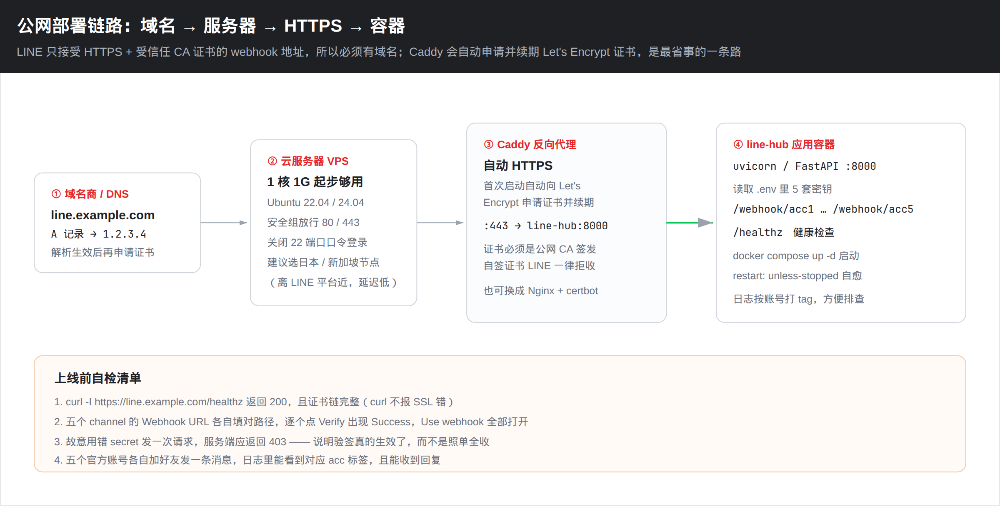
10. 在服务器上部署
SSH 登录后：
sudo apt-get update
sudo apt-get install -y git docker.io docker-compose-v2
sudo usermod -aG docker "$USER"
# 重新登录一次让 docker 组生效把本仓库拷上去（或只拷 line-hub/ 目录）：
git clone <你的仓库地址> && cd <仓库>/line-hub
cp .env.example .env
nano .env.env 里至少改这些：
LINE_DOMAIN=line.example.com
ACC1_NAME=客服一号
ACC1_CHANNEL_SECRET=从 Basic settings 复制
ACC1_CHANNEL_TOKEN=从 Messaging API 页 Issue 后复制
ACC2_NAME=客服二号
ACC2_CHANNEL_SECRET=...
ACC2_CHANNEL_TOKEN=...
# acc3 ~ acc5 同样启动：
docker compose up -d --build
docker compose logs -f --tail=80看到 loaded accounts: acc1, acc2, acc3, acc4, acc5 和 Caddy 申请证书成功，就算起来了。
curl -I https://line.example.com/healthz
# 期望 HTTP/2 200，且 curl 不报 SSL 错误curl 报错就先别去点 Verify。11. 回到 Console 点 Verify
服务器起来之后，5 个 channel 逐个打开 Messaging API 标签页：
- Webhook URL 确认是
https://你的域名/webhook/accN（N 和账号对得上）。 - 点 Verify，出现 Success。
- Use webhook 保持打开。
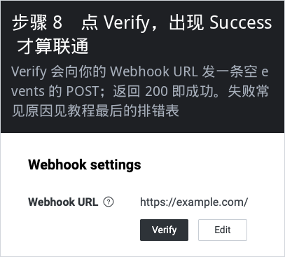
Verify 其实是 LINE 向你的 URL 发一条 {"events":[]} 的 POST，带签名。本仓库的服务对空 events 也会验签并回 200，所以 Verify 能过。
然后用手机给 5 个官方账号各发一句「ping」，应该各自回 [客服N号] ping。服务器日志里能看到对应的 slug=accN。
12. 可选加固
使用长期 token 时，可以在 channel 的 Security 标签页把服务器出口 IP 加进白名单。token 就算泄露，别人的机器也调不了 API。
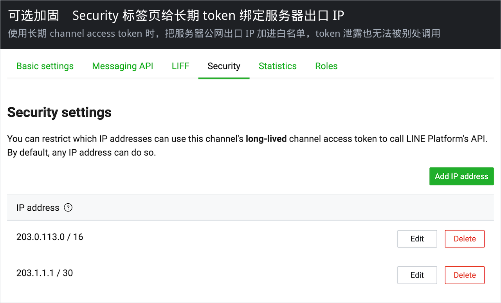
- 不要把
.env提交进 git（仓库已忽略）。 - 长期 token 换成 v2.1 短期 token，到期自动轮换。
- 服务器禁掉密码 SSH，只留密钥。
- 日志里不要打印 token / secret。
排错
| 现象 | 原因 | 处理 |
|---|---|---|
| Verify 报 SSL / certificate | 自签证书、证书链不完整、域名没解析到这台机器 | curl -vI https://域名/healthz 看证书；等 DNS 生效后再让 Caddy 重签 |
| Verify 报 404 | URL 路径写错，或服务没起来 | 必须是 /webhook/acc1 这种，末尾不要多斜杠；docker compose ps 看健康检查 |
| Verify 报 403 | 填进 .env 的 secret 和这个 channel 对不上 | 重新从 Basic settings 复制，注意 acc1 的 secret 不要贴到 acc2 |
| Verify 超时 | 安全组没放 443，或 webhook 处理太慢 | 放行 80/443；本服务是先回 200 再处理后台任务 |
| 能 Verify 但收不到用户消息 | Use webhook 没打开 | 回到 Messaging API 页把开关打开 |
| 用户有回复但不是你的程序回的 | Greeting / Auto-reply 还开着 | 在 OA Manager 或 Messaging API 页关掉 |
| 发不出消息，API 401 | token 重新 Issue 过，旧的失效了 | 把新 token 写进 .env，docker compose up -d 重启 |
| 只有某几个号不通 | 5 个 URL / 5 套密钥对串了 | 对照登记表，Console、.env、路径三处必须一致 |